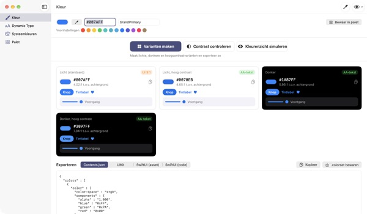
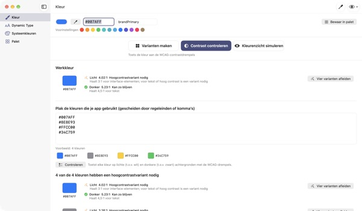
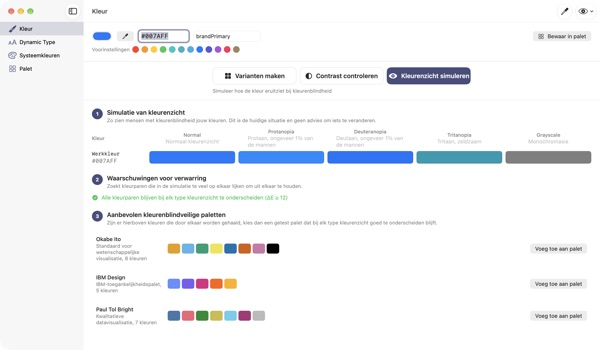
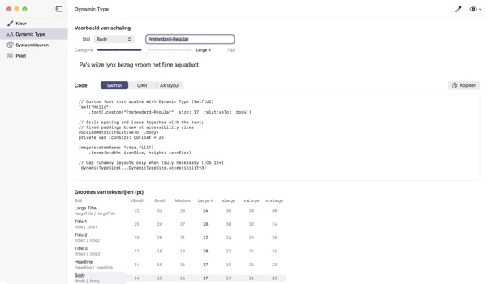

Eén kleur erin,
vier weergaven eruit
Systeemkleuren passen zich vanzelf aan donkere modus en Verhoog contrast aan. Je merkkleuren niet. TetraTint neemt één kleur uit de lichte modus, maakt de varianten Licht, Licht hoog contrast, Donker en Donker hoog contrast, en exporteert ze meteen naar Xcode.
Alle functies zijn gratis. Vereist macOS 14 of nieuwer.

Probeer je merkkleur
Plak een hexwaarde of tik op een voorinstelling. Met dezelfde berekening als in de app zie je direct alle vier varianten en hun contrast.
Is je merkkleur weleens verdwenen in donkere modus?
Het blauw dat je in lichte modus koos, oogt dof op zwart, en wie Verhoog contrast aan heeft, kan de tekst amper lezen. Voor elke weergave een kleur zoeken en elk contrast met de hand narekenen kost een halve dag. TetraTint leidt de varianten af zoals systeemkleuren tussen weergaven verschuiven, en laat meteen zien of elke variant voldoet.
Controleer al je kleuren in één keer
Plak de complete hexlijst van je app en elke kleur krijgt een oordeel: kan zo blijven, hoogcontrastvariant nodig of alleen voor decoratie.
Met één klik wordt een probleemkleur vier varianten in je palet. Handig bij het voorbereiden van het toegankelijkheidslabel Voldoende contrast in de App Store.

Kijk door de ogen van kleurenblinden
Bekijk je palet met protanopie, deuteranopie, tritanopie en in grijstinten, met een waarschuwing voor elk paar dat lastig uit elkaar te houden wordt.
Laad de kleurenblindveilige paletten Okabe–Ito, IBM en Paul Tol met één klik, of bekijk de hele app zo met de oogknop rechtsboven.

Eigen lettertypen volgen de tekstgrootte
Bekijk alle 11 tekststijlen in 7 groottes en sleep een schuifknop om de echte groottes te zien.
Voer de PostScript-naam van je lettertype in en krijg code voor UIKit, SwiftUI en @ScaledMetric, plus code die bij grote tekst de lay-out omzet.

In drie stappen aan de slag
- 1
Voer een basiskleur in
Plak een hex, pak een kleur waar dan ook op het scherm met de pipet of kies een voorinstelling.
- 2
Controleer de vier varianten
Lees de contrastlabels en pas varianten die niet bij je merk passen aan met de kleurkiezer.
- 3
Exporteer naar Xcode
Kopieer of bewaar als Contents.json, .colorset of UIKit- en SwiftUI-code.
Zo ontstaan de varianten en dit betekenen de labels
- Licht (standaard)
- Je kleur zoals ingevoerd
- Licht, hoog contrast
- Iets verzadigder en donkerder tot 4.5:1 op wit
- Donker
- Iets lichter en levendiger (helderheid +5, verzadiging +3)
- Donker, hoog contrast
- Lichter tot 7:1 op zwart
- AA-tekst
- Minstens 4.5:1 t.o.v. de achtergrond, geschikt voor lopende tekst
- UI 3:1
- Minstens 3:1, goed voor knoppen en symbolen, niet voor tekst
- Laag
- Onder 3:1, niet gebruiken voor tekst, symbolen of statussen
- Export
- Contents.json · .colorset · UIKit · SwiftUI, of het hele palet als één .xcassets
De referentiewaarden van systeemkleuren komen uit Apples Human Interface Guidelines en kunnen veranderen met systeemupdates. Gebruik in je uitgebrachte app de API's voor systeemkleuren.
Veelgestelde vragen
Is het echt gratis?
Ja. Alle functies zijn gratis, zonder account en zonder advertenties. Heb je er wat aan, dan kun je via Instellingen een fooi geven; daarmee ontgrendel je niets.
De gemaakte varianten passen niet bij ons merk.
Pas elke variant aan met de kleurkiezer op de kaart. Alles opnieuw maken gooit je handmatige aanpassingen weg en leidt alles opnieuw af van de basiskleur.
Hoe worden de varianten berekend?
Ze volgen hoe Apples systeemkleuren echt verschuiven tussen weergaven: in donker iets lichter en levendiger, minstens 4.5:1 op wit voor licht hoog contrast en minstens 7:1 op zwart voor donker hoog contrast.
Wat betekent een waarschuwing bij de simulatie van kleurenzicht?
Dat het verschil tussen twee kleuren (ΔE) in die simulatie onder 12 zakt en ze moeilijk te onderscheiden zijn. Vertrouw niet alleen op kleur: voeg symbolen, patronen of labels toe, of stap over op een veilig palet.
Hoe laat ik een eigen lettertype Dynamic Type ondersteunen?
Voer bij Dynamic Type de PostScript-naam van het lettertype in en kies een stijl voor code in UIKit, SwiftUI en @ScaledMetric. In toegankelijkheidsgroottes wordt Body meer dan drie keer zo groot, dus vermijd vaste hoogtes en lineLimit(1).
Geëxporteerde kleuren zien er anders uit dan de systeemkleuren in mijn app.
De referentiewaarden komen uit de Human Interface Guidelines en kunnen per systeemversie verschillen. Gebruik voor systeemkleuren altijd de API's UIColor of Color.
Waar wordt mijn palet bewaard?
Alleen op je Mac. Er wordt niets met de cloud gesynchroniseerd of ergens heen gestuurd. Zie het privacybeleid voor details.
Wordt een kleur die ik met de pipet pak bewaard?
Nee. Alleen de kleurwaarde op het gekozen punt wordt gelezen en als werkkleur gebruikt. Er wordt geen schermafbeelding bewaard of verstuurd.
Op welke Macs werkt de app?
Op macOS 14 (Sonoma) of nieuwer. Bij het exporteren kies je zelf waar de bestanden worden bewaard.
Fouten, ideeën of vragen? Mail naar leeo@kakao.com. Meestal antwoorden we binnen 2–3 dagen.